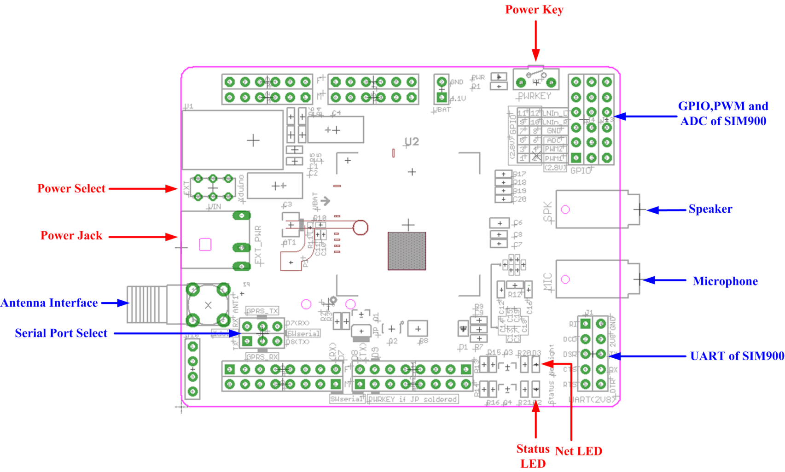
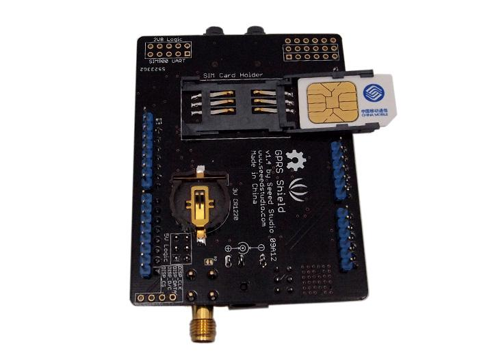
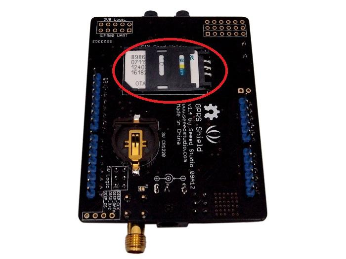
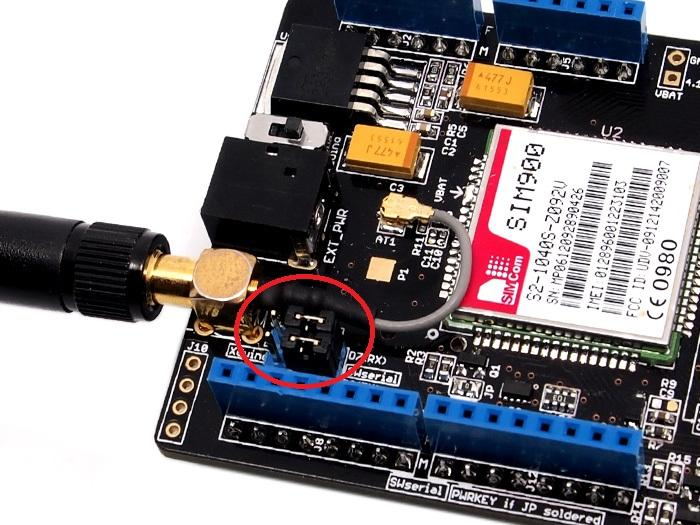
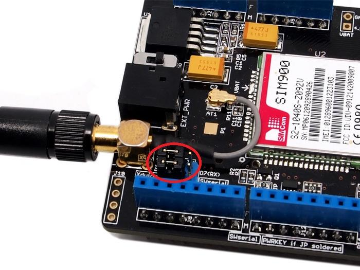

The GPRS Shield provides you a way to use the GSM cell phone network to receive data from a remote location. The shield allows you to achieve this via any of the three methods:
The GPRS Shield is compatible with all boards which have the same form factor (and pinout) as a standard Arduino Board. The GPRS Shield is configured and controlled via its UART using simple AT commands. Based on the SIM900 module from SIMCOM, the GPRS Shield is like a cell phone. Besides the communications features, the GPRS Shield has 12 GPIOs, 2 PWMs and an ADC.

Source(s): [ GPRS Shield V1.0 Features support]
For SIM900's Specifications, please refer this PDF file: SIM900_SPEC.pdf
| Item | Min | Typical | Max | Unit |
|---|---|---|---|---|
| Voltage | 4.8 | 5.0 | 5.2 | VDC |
| Current | / | 50 | 450 | mA |
| Dimension(with antenna) | 110x58x19 | mm | ||
| Net Weight | 76±2 | g | ||

Power select - select the power supply for GPRS shield(external power or 5v of arduino)
Power jack - connected to external 4.8~5VDC power supply
Antenna interface - connected to external antenna
Serial port select - select either software serial port or hareware serial port to be connected to GPRS Shield
Hardware Serial - D0/D1 of Arduino/Seeeduino
Software serial - D7/D8 of Arduino/Seeeduino only
Status LED - tell whether the power of SIM900 is on
Net light - tell the status about SIM900 linking to the net
UART of SIM900 - UART pins breakout of SIM900
Microphone - to answer the phone call
Speaker - to answer the phone call
GPIO,PWM and ADC of SIM900 - GPIO,PWM and ADC pins breakout of SIM900
Power key - power up and down for SIM900
D0 - Unused if you select software serial port to communicate with GPRS Shield
D1 - Unused if you select software serial port to communicate with GPRS Shield
D7 - Used if you select software serial port to communicate with GPRS Shield
D8 - Used if you select software serial port to communicate with GPRS Shield
D9 - Used for software control the power up or down of the SIM900
Note: A4 and A5 are connected to the I2C pins on the SIM900. The SIM900 however cannot be accessed via the I2C .
| LED | State | Function |
|---|---|---|
| Status | Off | Power Off |
| On | Power On | |
| Netlight | Off | SIM900 is not working |
| 64ms On/800ms Off | SIM900 does not find the network | |
| 64ms On/3000ms Off | SIM900 find the network | |
| 64ms On/300ms Off | GPRS communication |
|  Inserting the SIM Card into the holder |
 Locking the SIM Card Holder |
|  GPRS communicate with arduino by software serial |
 GPRS communicate with arduino by hardware serial |
void powerUpOrDown() { pinMode(9, OUTPUT); digitalWrite(9,LOW); delay(1000); digitalWrite(9,HIGH); delay(2000); digitalWrite(9,LOW); delay(3000); }
The GPRS Shield comes with all the accessories that you need to get started with sending data over the GSM network except an Arduino board and a GSM SIM Card. If you want to make voice calls, you would also require a headset with microphone.
As you received your GPRS Shield, what would be the first thing you want to do with it? Send out a text (SMS)? or call up someone (headset required)? You can do all of this by talking to the GPRS Shield using AT Commands - which is a special language that it understands. AT Commands are simple textual commands sent to the GPRS modem over its serial interface (UART), so you can use any serial terminal software to communicate with it.
Note: Almost all the AT commands should be sent followed by carriage return and you need to select the "+CR"option in the serial port terminal.
To experiment with AT commands, you would require a way to power up and communicate with your GPRS Shield. The best way to do this using an Arduino Duemilanove board described below. The same steps are applicable for Seeeduino or Seeeduino Stalker.
//Serial Relay - Arduino will patch a //serial link between the computer and the GPRS Shield //at 19200 bps 8-N-1 //Computer is connected to Hardware UART //GPRS Shield is connected to the Software UART #include <SoftwareSerial.h> SoftwareSerial GPRS(7, 8); unsigned char buffer[64]; // buffer array for data recieve over serial port int count=0; // counter for buffer array void setup() { GPRS.begin(19200); // the GPRS baud rate Serial.begin(19200); // the Serial port of Arduino baud rate. } void loop() { if (GPRS.available()) // if date is comming from softwareserial port ==> data is comming from gprs shield { while(GPRS.available()) // reading data into char array { buffer[count++]=GPRS.read(); // writing data into array if(count == 64)break; } Serial.write(buffer,count); // if no data transmission ends, write buffer to hardware serial port clearBufferArray(); // call clearBufferArray function to clear the storaged data from the array count = 0; // set counter of while loop to zero } if (Serial.available()) // if data is available on hardwareserial port ==> data is comming from PC or notebook GPRS.write(Serial.read()); // write it to the GPRS shield } void clearBufferArray() // function to clear buffer array { for (int i=0; i<count;i++) { buffer[i]=NULL;} // clear all index of array with command NULL }
RDY +CFUN: 1 +CPIN: READY Call Ready 
*Step 2: Sending a text message (SMS)
Now that our test setup is ready, let's play around with some AT Commands manually before moving on to programming the Arduino to do this. Let's try sending an SMS to start.
*Step 3: Exploring further
Now that you have gotten a taste of how the AT Commands work, you can try out some more of them before moving on to developing sketches for Arduino to use the GPRS Shield. This involves creating a sketch for sending out these same sequence of AT Commands (on your behalf) out the serial port to the GPRS Shield to perform the same task of sending and SMS, making a call or sending data over a GPRS connection. You can go through the AT Commands reference manual to figure out the sequence of commands required to do a particular task. If while developing an Arduino sketch, you find that the GPRS Shield isn't what you expected it to do, then you will need to check your AT Commands and their sequence. To do this, reload the serial relay sketch attached above in the getting started section into ATmega328P and type out the AT Commands manually and check the output. The responses sent by the GPRS Shield will help you debug the AT Command sequence. NOTE: A C program to perfom the same task as the serial relay sketch present above has also been developed and attached: File:Softuart relay atmega328p.zip. The program was developed on a Windows PC. AVRStudio4 was used as the IDE and WinAVR was used as the compiler. The ZIP file contains an AVRStudio4 Project. The C compiler (WinAVR) will generate an Intel Hex (.hex). To upload this .hex file into an Arduino board outside of Arduino IDE would require a program which is able to communicate with the Arduino boards bootloader. XLoader is such a program which runs on Windows can upload .hex files generated by various compiler into an Arduino Board.
With Arduino 1.0 you should be able to use the SoftwareSerial library included with the distribution (instead of NewSoftSerial). However, you must be aware that the buffer reserved for incoming messages are hardcoded to 64 bytes in the library header, "SoftwareSerial.h":
This means that if the GPRS module responds with more data than that, you are likely to loose it with a buffer overflow! For instance, reading out an SMS from the module with "AT+CMGR=xx" (xx is the message index), you might not even see the message part because the preceding header information (like telephone number and time) takes up a lot of space. The fix seems to be to manually change _SS_MAX_RX_BUFF to a higher value (but reasonable so you don't use all you precious memory!)
The Softwareserial library has the following limitations (taken from arduino page) If using multiple software serial ports, only one can receive data at a time. http://arduino.cc/hu/Reference/SoftwareSerial This means that if you try to add another serial device ie grove serial LCD you may get communication errors unless you craft your code carefully.
The demo code below is for the Xduino to send SMS message/dial a voice call/submit a http request to a website and upload datas to the pachube. It has been tested on Arduino Duemilanove but will work on any compatible variant, plesse note that this sketch uses the sorfware UART of ATmega328P. please follow the following steps for running this sketch.
/*Note: this code is a demo for how to using gprs shield to send sms message, dial a voice call and send a http request to the website, upload data to pachube.com by TCP connection, The microcontrollers Digital Pin 7 and hence allow unhindered communication with GPRS Shield using SoftSerial Library. IDE: Arduino 1.0 or later Replace the following items in the code: 1.Phone number, don't forget add the country code 2.Replace the Access Point Name 3. Replace the Pachube API Key with your personal ones assigned to your account at cosm.com */ #include <SoftwareSerial.h> #include <String.h> SoftwareSerial mySerial(7, 8); void setup() { mySerial.begin(19200); // the GPRS baud rate Serial.begin(19200); // the GPRS baud rate delay(500); } void loop() { //after start up the program, you can using terminal to connect the serial of gprs shield, //if you input 't' in the terminal, the program will execute SendTextMessage(), it will show how to send a sms message, //if input 'd' in the terminal, it will execute DialVoiceCall(), etc. if (Serial.available()) switch(Serial.read()) { case 't': SendTextMessage(); break; case 'd': DialVoiceCall(); break; case 'h': SubmitHttpRequest(); break; case 's': Send2Pachube(); break; } if (mySerial.available()) Serial.write(mySerial.read()); } ///SendTextMessage() ///this function is to send a sms message void SendTextMessage() { mySerial.print("AT+CMGF=1\r"); //Because we want to send the SMS in text mode delay(100); mySerial.println("AT + CMGS = \"+86138xxxxx615\"");//send sms message, be careful need to add a country code before the cellphone number delay(100); mySerial.println("A test message!");//the content of the message delay(100); mySerial.println((char)26);//the ASCII code of the ctrl+z is 26 delay(100); mySerial.println(); } ///DialVoiceCall ///this function is to dial a voice call void DialVoiceCall() { mySerial.println("ATD + +86138xxxxx615;");//dial the number delay(100); mySerial.println(); } ///SubmitHttpRequest() ///this function is submit a http request ///attention:the time of delay is very important, it must be set enough void SubmitHttpRequest() { mySerial.println("AT+CSQ"); delay(100); ShowSerialData();// this code is to show the data from gprs shield, in order to easily see the process of how the gprs shield submit a http request, and the following is for this purpose too. mySerial.println("AT+CGATT?"); delay(100); ShowSerialData(); mySerial.println("AT+SAPBR=3,1,\"CONTYPE\",\"GPRS\"");//setting the SAPBR, the connection type is using gprs delay(1000); ShowSerialData(); mySerial.println("AT+SAPBR=3,1,\"APN\",\"CMNET\"");//setting the APN, the second need you fill in your local apn server delay(4000); ShowSerialData(); mySerial.println("AT+SAPBR=1,1");//setting the SAPBR, for detail you can refer to the AT command mamual delay(2000); ShowSerialData(); mySerial.println("AT+HTTPINIT"); //init the HTTP request delay(2000); ShowSerialData(); mySerial.println("AT+HTTPPARA=\"URL\",\"www.google.com.hk\"");// setting the httppara, the second parameter is the website you want to access delay(1000); ShowSerialData(); mySerial.println("AT+HTTPACTION=0");//submit the request delay(10000);//the delay is very important, the delay time is base on the return from the website, if the return datas are very large, the time required longer. //while(!mySerial.available()); ShowSerialData(); mySerial.println("AT+HTTPREAD");// read the data from the website you access delay(300); ShowSerialData(); mySerial.println(""); delay(100); } ///send2Pachube()/// ///this function is to send the sensor data to the pachube, you can see the new value in the pachube after execute this function/// void Send2Pachube() { mySerial.println("AT+CGATT?"); delay(1000); ShowSerialData(); mySerial.println("AT+CSTT=\"CMNET\"");//start task and setting the APN, delay(1000); ShowSerialData(); mySerial.println("AT+CIICR");//bring up wireless connection delay(3000); ShowSerialData(); mySerial.println("AT+CIFSR");//get local IP adress delay(2000); ShowSerialData(); mySerial.println("AT+CIPSPRT=0"); delay(3000); ShowSerialData(); mySerial.println("AT+CIPSTART=\"tcp\",\"api.cosm.com\",\"8081\"");//start up the connection delay(2000); ShowSerialData(); mySerial.println("AT+CIPSEND");//begin send data to remote server delay(4000); ShowSerialData(); String humidity = "1031";//these 4 line code are imitate the real sensor data, because the demo did't add other sensor, so using 4 string variable to replace. String moisture = "1242";//you can replace these four variable to the real sensor data in your project String temperature = "30";// String barometer = "60.56";// mySerial.print("{\"method\": \"put\",\"resource\": \"/feeds/42742/\",\"params\"");//here is the feed you apply from pachube delay(500); ShowSerialData(); mySerial.print(": {},\"headers\": {\"X-PachubeApiKey\":");//in here, you should replace your pachubeapikey delay(500); ShowSerialData(); mySerial.print(" \"_cXwr5LE8qW4a296O-cDwOUvfddFer5pGmaRigPsiO0");//pachubeapikey delay(500); ShowSerialData(); mySerial.print("jEB9OjK-W6vej56j9ItaSlIac-hgbQjxExuveD95yc8BttXc");//pachubeapikey delay(500); ShowSerialData(); mySerial.print("Z7_seZqLVjeCOmNbEXUva45t6FL8AxOcuNSsQS\"},\"body\":"); delay(500); ShowSerialData(); mySerial.print(" {\"version\": \"1.0.0\",\"datastreams\": "); delay(500); ShowSerialData(); mySerial.println("[{\"id\": \"01\",\"current_value\": \"" + barometer + "\"},"); delay(500); ShowSerialData(); mySerial.println("{\"id\": \"02\",\"current_value\": \"" + humidity + "\"},"); delay(500); ShowSerialData(); mySerial.println("{\"id\": \"03\",\"current_value\": \"" + moisture + "\"},"); delay(500); ShowSerialData(); mySerial.println("{\"id\": \"04\",\"current_value\": \"" + temperature + "\"}]},\"token\": \"lee\"}"); delay(500); ShowSerialData(); mySerial.println((char)26);//sending delay(5000);//waitting for reply, important! the time is base on the condition of internet mySerial.println(); ShowSerialData(); mySerial.println("AT+CIPCLOSE");//close the connection delay(100); ShowSerialData(); } void ShowSerialData() { while(mySerial.available()!=0) Serial.write(mySerial.read()); }
Here is the GPRS Shield FAQ that list the frequently problems ,please read it before use :
Stalker v2.1/2.0 has used the Digital Pin(D7/D8) , ou need to connected GPRS_TX/GPRS_RX to other Digital Pin as software serial port .And this problem had solved at Stalker 2.2 version.
Because GPRS Shield conflict with other module via I2C . GPRS Shield doesn't use I2C port, you can disconnect the connection from SIM900 I2C port to A4/A5 .
| Revision | Descriptions | Release |
|---|---|---|
| v0.9b | Initial public release (beta) | Mar 3, 2011 |
| v1.2 | Added software port to power on/off of SIM90 | Dec 2, 2011 |
| v1.4 | Re-design the power source circuit, re-lay the PCB layout | Aug 30, 2012 |

This is a demo make by GPRS Shield V2.0.
With this demo, we make a mobile phone named Arduino Phone by combining Arduino, GPRS Shield shield and other modules.

GPRS Shield v1.4 Schematic
GPRS Shield v1.4 eagle file
AT Commands v1.00 & AT Commands v1.03 &
AT Commands v1.11 &
Hardware Design - SIM900 Documentation
Si5902BDC - Dual N-Channel 30 V (D-S) MOSFETs (used for 2.8V <> 5.0V translation for Serial Interface)
SIM900 firmware and tool(firmware:1137B08SIM900M64_ST) for firmware upgrade
SIM900 Firmware 1137B13SIM900M64_ST.zip
Copyright (c) 2008-2016 Seeed Development Limited (www.seeedstudio.com / www.seeed.cc)